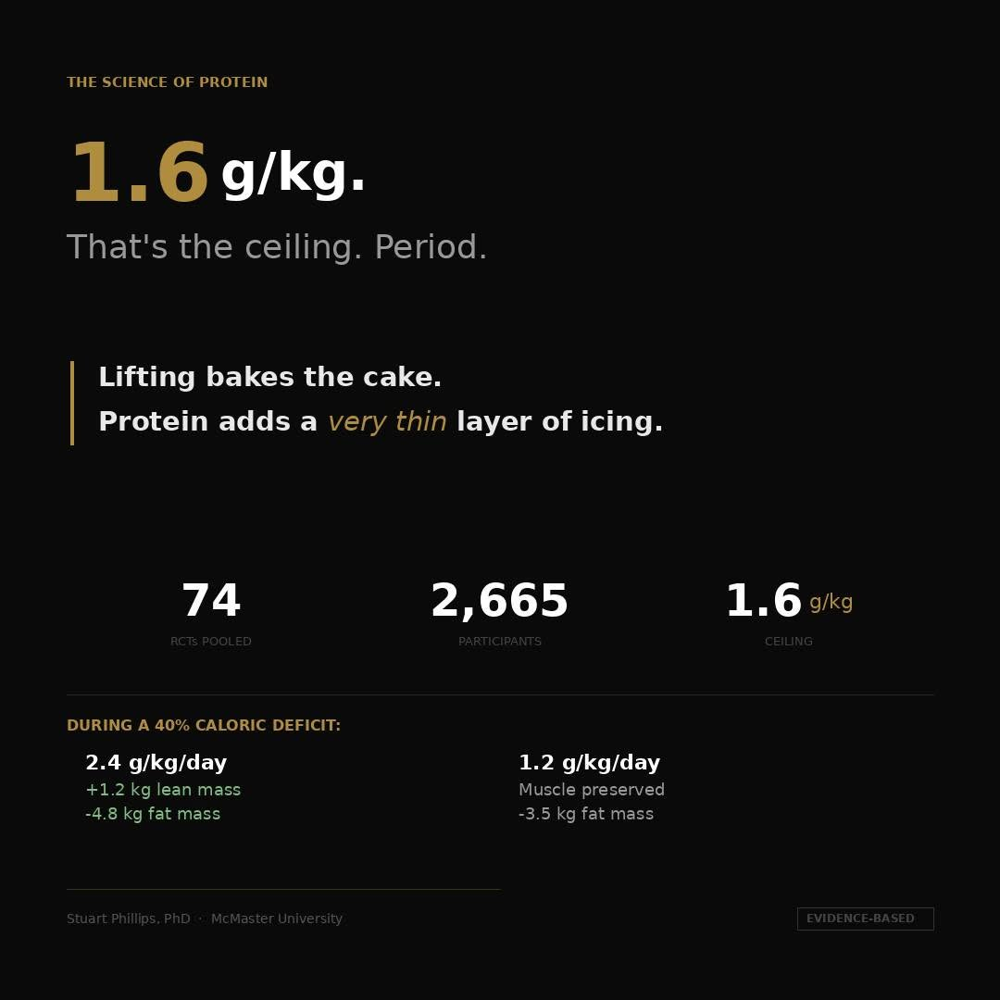

Influencers constantly misrepresent Stuart Phillip’s research on protein.
Here is what he really says about protein and resistance training: Straight from the horse’s mouth!
This is what the preponderance of evidence from the sports science literature actually shows. Minus the sophisticated charlatanism.
This is PART1. See this additional post for PART2, which specifically discusses older people and women: ↪ Stuart Phillips: the 1.6 g/kg protein ceiling holds for older adults; women may need less.
#proteinHD #proteinsummaryHD #resistancetrainingHD #influencersHD #stuartphillipsHD
1.6 g/kg. That's the ceiling. Period.
I've spent over 30 years studying protein and muscle.
People want the answer to be complicated.
It's not.
We pooled 74 randomized controlled trials — nearly 2,700 people — and the signal is clear: once you hit ~1.6 g/kg/day of protein combined with resistance training, more doesn't build more muscle, more strength, more function, more... anything!
"But what about when I'm cutting?"
Fair question. We tested that too.
We put young men in a 40% caloric deficit for 4 weeks with intense exercise. The high-protein group (2.4 g/kg/day) gained 1.2 kg of lean mass and lost 4.8 kg of fat. That's impressive.
But here's what nobody talks about...
The lower-protein group at 1.2 g/kg? They held their muscle. LBM didn't change. They still got stronger. They still improved performance across the board.
So yes, more protein during a hard cut helps you gain a bit of lean mass. But you don't need to panic about hitting 3, 4, 5x the RDA. Even at half the "optimal" dose, muscle was preserved.
The supplement industry would rather you didn't know that.
Here's what actually matters:
→ Hit 1.6 g/kg/day if you're training and want to grow.
→ Cutting hard? Aim for ~2.4 g/kg/day. It helps. It's not magic.
→ Lift! That's the MOST IMPORTANT part that people skip.
The protein you need is less than you think.
The training you need is more than you think.
That's the whole story. I wish it sold more supplements.
Evidence-based, no BS, understanding the limitations of the methods used (lean mass isn't muscle mass), actually did the research, spent years doing the research...
Nunes et al. (2022). J Cachexia Sarcopenia Muscle. 74 RCTs, n = 2,665. DOI: 10.1002/jcsm.12922
Longland et al. (2016). Am J Clin Nutr. 103(3):738-746. DOI: 10.3945/ajcn.115.119339
Morton et al. (2018). Br J Sports Med. 52(6):376-384. PMID: 28698222
LIFTING BAKES THE CAKE... PROTEIN ADDS A ( VERY THIN) LAYER OF ICING...
